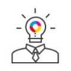

HOME > 인재채용 > 인재상
인재상
사람 또 사람, 그리고 사랑 그 놀라운 힘을 믿습니다.
웅진의 인재는 학습하는 전문인을 기본으로 혁신하는 창의인, 성취하는 열정인, 협력하는 조직인을 지향합니다. 이는 또또사랑의 가치를 알고 그를 통해 성장할 가능성을 가진 인재를 뜻합니다.

학습하는 전문인
끊임없는 학습을 통해
자신을 성장시키고
프로정신과 담당업무에 대한
전문지식을 겸비한 사람
혁신하는 창의인
항상 새로운 것을 찾으며
혁신과 독창성을 추구하는 사람
성취하는 열정인
끈기, 추진력, 의지,
일에 대한 열정을 지니고
자기 일에 책임을 다하는 사람
협력하는 조직인
인간관계와 팀워크를
중시하고 유연한 사고로
더불어 일할 줄 아는 사람
웅진은 개인의 개성과 다양성을 존중하는
창의적 인재를 육성합니다.
웅진의 경영정신인 ‘또또사랑’은 웅진씽크빅의 핵심가치인 동시에 인사철학입니다. 사랑을 통해 인재들의 잠재된 능력을 이끌어 내는 것이 웅진씽크빅의 인사와 교육 목표이며, 이렇게 해서 만들어진 ‘신기(神氣)’는 웅진씽크빅만의 경쟁력이 된다고 믿습니다. 채용부터 인재 육성에 이르는 전 과정에서 웅진씽크빅은 ‘사람’을 가장 중요한 가치로 생각합니다. 사람에게 내재된 능력을 신뢰하고, 창조적 역량을 길러내어 웅진씽크빅의 미래를 이끌어갈 리더로 육성합니다.
인재육성
웅진은 구성원들이 역량과 열정을 갖춘 전문가와 리더로 성장할 수 있도록 다양한 교육 프로그램을 지원하고 있습니다.
- 리더역량 강화 교육
- 신임 임원 양성 과정, 신임 팀장 양성 과정, 팀장 리더십 워크숍, 여성 리더 교육, 리더 특강 등을 통한 리더 역량 및 통찰력 강화
- 직무역량 강화 교육
- SAP 모듈 과정, PM 양성 과정, AWS 과정, 웹 과정 등 사내/외 직무교육으로 멀티플레이어 육성 및 자격증 취득 지원
- 기본역량 함양 교육
- 웅진 입문 과정, New Start 과정, 직장예절, 기획력, 커뮤니케이션 등 기본 소양 향상